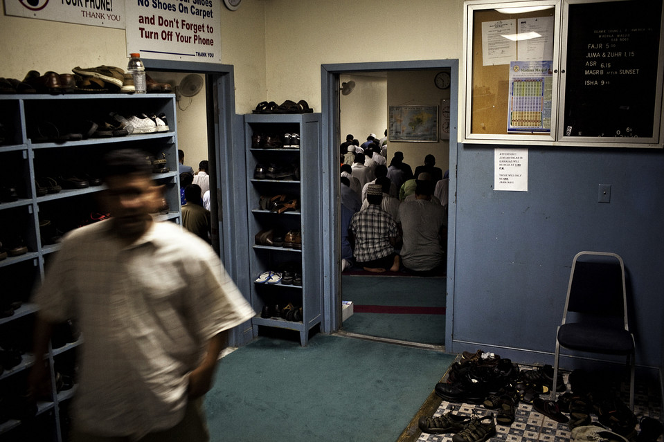
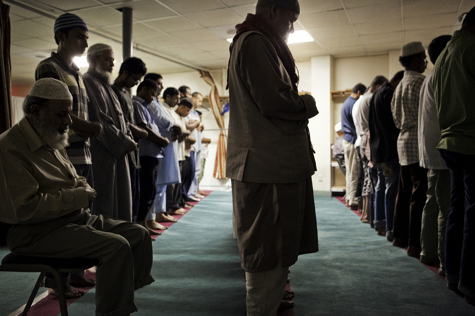
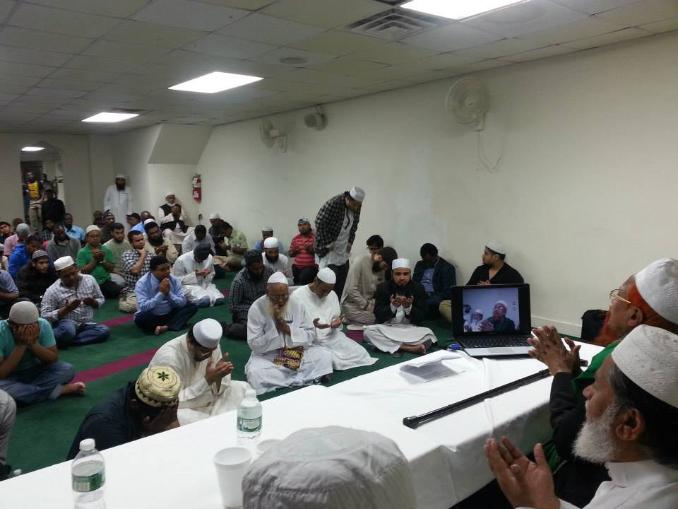
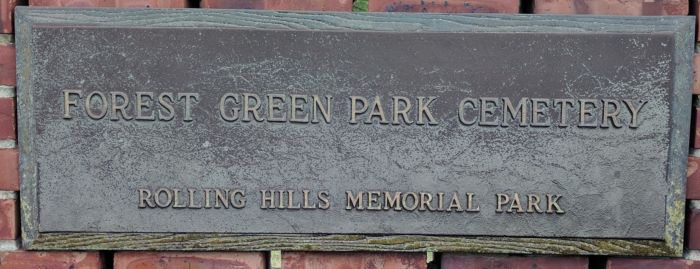
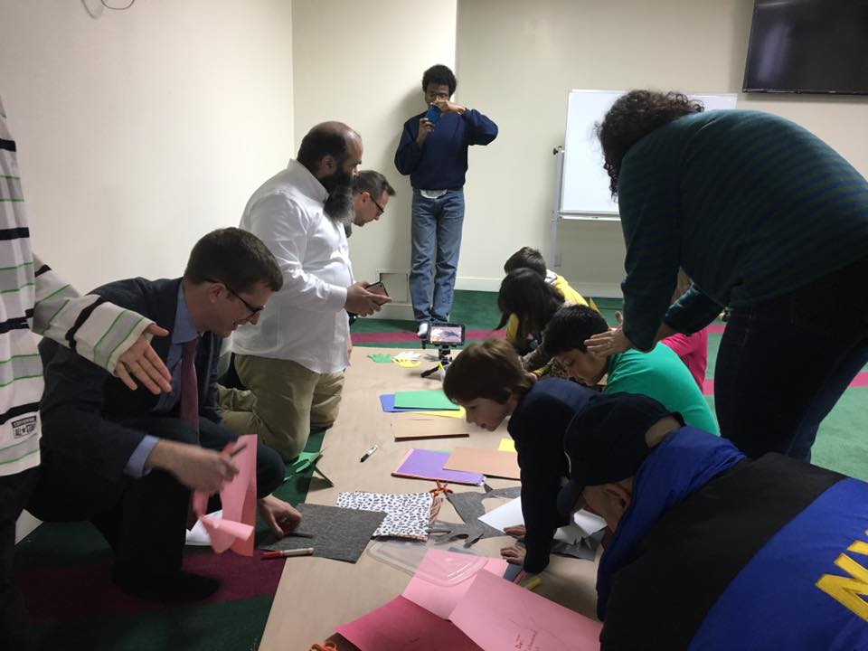
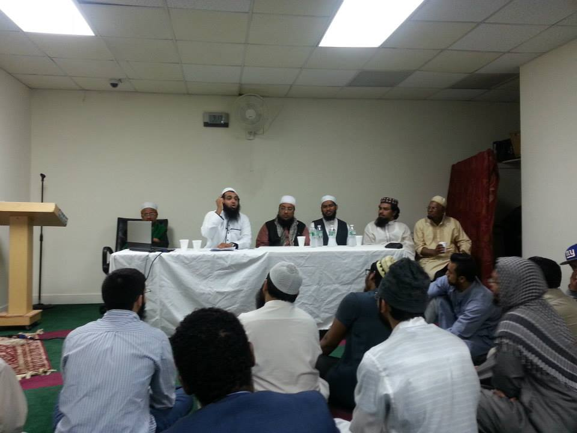

Contact the office to make an appointment
Phone: (212) 533-5060
Email: contact@madinamasjidnyc.org

Talk to the management to make an appointment
Please call us: (212) 533-5060
Requirements for Nikah (عقد نكاح)
1) Mutual agreement to marry between the bride and groom (Ijab-wa-Qubul).
2) Two sane adult male witnesses.
3) Dowry (mahr) to be paid by the groom to the bride.
4) Guardian (wali) for the bride.
5) Written marriage contract (Aqd-Nikah or Nikah nama) signed by the bride and groom, and the two witnesses.
6) Marriage sermon (khutbah).

Contact the office to make an appointment
Phone: (212) 533-5060
Email: contact@madinamasjidnyc.org

Contact the office to make an appointment
Phone: (212) 533-5060
Email: contact@madinamasjidnyc.org

Contact the office to make an appointment
Phone: (212) 533-5060
Email: contact@madinamasjidnyc.org
Prayer (Jamat) Timings
| Prayer | Time |
|---|---|
| Fajr | 4:15 |
| Zuhr | 1:30 |
| Asr | 6:30 |
| Maghrib | SUNSET |
| Isha | 10:30 |
Friday Jummah Prayers
Jummah Prayers are offered each Friday with the first adhan being called at 1:00 PM and the khutbah starting at 1:30 PM. Adhan being called at 2:15 PM and the khutbah starting at 2:20 PM.Muslim Seminars
Madina Islamic Center (MIC) hosts a community and family night on several occasions of the year. During this event, Madina Masjid provides an environment for community members to bring their family members and children to come learn more about Islam. The intention of the seminars are to promote family awareness, feel part of a community, learn about islam, and to teach the youth to be active members of the community.Counseling
To schedule individual counseling at Madina Masjid:Contact the office to make an appointment
Phone: (212) 533-5060
Email: contact@madinamasjidnyc.org
Marriage Services
To schedule matrimonial services at Madina Masjid:Talk to the management to make an appointment
Please call us: (212) 533-5060
Requirements for Nikah (عقد نكاح)
1) Mutual agreement to marry between the bride and groom (Ijab-wa-Qubul).
2) Two sane adult male witnesses.
3) Dowry (mahr) to be paid by the groom to the bride.
4) Guardian (wali) for the bride.
5) Written marriage contract (Aqd-Nikah or Nikah nama) signed by the bride and groom, and the two witnesses.
6) Marriage sermon (khutbah).
Funeral Services
Madina Masjid provides funeral arrangement and cleansing. We have two grave yard sites in Forest Park Cemetary, which is newly purchases. Our old burial property was in Silver Mount Cemetary and a lot of our founders are located there. Please contact us for more information or to speak to the management.Contact the office to make an appointment
Phone: (212) 533-5060
Email: contact@madinamasjidnyc.org
Interfaith Programs
Madina Masjid hosts interfaith events on several occasions of the year. During these events, local East Village congregations join us for an Adult and children interfaith program. Some of our interfaith neighborhood community include Middle Collegiate Church, Sixth Street Community Synagogue, St. Mark’s Church in-the-Bowery, Town and Village Synagogue, and Catholic Worker.Health Check-Up
Madina Masjid provides flu shots and blood pressure testing. Please contact us for more information or to speak to the management.Contact the office to make an appointment
Phone: (212) 533-5060
Email: contact@madinamasjidnyc.org
Tablique
Madina Islamic Center (MIC) allows Muslims practicing Tablique to come reside in the masjid. Please contact us for more information or to speak to the management.Contact the office to make an appointment
Phone: (212) 533-5060
Email: contact@madinamasjidnyc.org